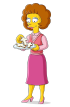
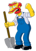
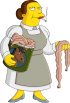

Los Simpson
"Los Simpson" es una exitosa serie de animación estadounidense que se ha convertido en un fenómeno cultural a nivel mundial. Fue creada por Matt Groening y se estrenó por primera vez el 17 de diciembre de 1989. La serie sigue las aventuras y desventuras de la familia Simpson, compuesta por Homero, Marge, Bart, Lisa y Maggie, junto con una amplia variedad de personajes secundarios que habitan en la ficticia ciudad de Springfield.
Desde su debut ,han sido emitidos 750 episodios por television a lo largo de 34 temporadas y contando, siendo la serie animada de comedia mas longeva en los Estados Unidos.
La serie recibio aclamacion universal en sus primeras temporadas en los años 1990s, siendo considerada esta su "epoca dorada". ha sido ampliamente elogiada por su humor inteligente, su capacidad para abordar temas complejos y su capacidad para conectarse con una amplia audiencia. Esta claro que la serie ha dejado una huella duradera en la cultura popular y ha seguido siendo un referente en la televisión durante décadas.
La pagina
En esta pagina podras encontrar informacion sobre la serie asi como tambien poder ver online las temporadas clasicas. Por ahora estan disponibles todos los capitulos de la temporada 1 hasta la temporada 12 en español(Latinoamericano).
Con el tiempo y apoyo que reciba la pagina se agregaran las temporadas faltantes hasta que en un futuro la serie pueda ser vista de inicio a fin. Tambien se planea agregar diversos idiomas y subtitulos para que pueda ser disfrutada por una amplia audiencia.
Personajes
Familia Simpson
| Foto | Nombre | Doblaje | Descipcion |
|---|---|---|---|
| Homero Simpson | Humberto Velez | Es el padre de la familia Simpson y protagonista; tiene 38 años, es obeso, calvo y con poco sentido común, aunque ama a todos sus hijos, aun así, su relación con Bart muchas veces es temperamental y agresiva. | |
| Marge Bouvier | Claudia Motta | Es la madre de Bart, Lisa, Maggie y esposa de Homero, tiene 38 años. Es una madre abnegada, fanática del orden y la limpieza, en muchas ocasiones es la voz no atendida de la moderación y la razón aunque posee una actitud puritana y crítica que oscila entre la inocencia y el fanatismo intolerante. Siempre que se enfada hace un sonido similar a un "hrmmm | |
| Bart Simpson | Claudia Motta | Es el hijo mayor, tiene 10 años de edad. Es travieso y a veces hiperactivo; muchas veces se mete en líos principalmente por tener ideas vandálicas o que se salen de control. | |
| Lisa Simpson | Patricia Acevedo | Es la hija del medio en la familia. Tiene 8 años, es muy madura para su edad, aunque también es egocéntrica y siempre quiere ser completamente perfecta; en muchas ocasiones ha sido criticada por ser la opinión que a nadie le interesa oír y por su idealismo desenfocado que la lleva a participar en movimientos y actividades de protesta donde lejos de solo protestar incluso intenta imponer su punto de vista obligatoriamente como sucedería cuando se hizo vegetariana. | |
| Maggie Simpson | - | Es la bebé y la menor de la familia. Tiene 2 años, y físicamente es la versión preescolar de Lisa. Tiene el cerebro de un constante infractor de la ley e incluso en varias ocasiones ha usado armas de fuego y agredido gente; a pesar de ello mantiene la inocencia y ternura de una bebé. |
Familia Flanders
| Foto | Nombre | Doblaje | Descipcion |
|---|---|---|---|
| Ned Flanders | Óscar Gómez | Es viudo de Maude, dejando solo y apenado a Ned. Tiene dos hijos fruto de dicho matrimonio, Rod y Todd. Es un cristiano devoto y sigue la Biblia estrictamente, tan literalmente como es posible y se conmociona fácilmente cuando ve puesto en duda cualquier punto de sus dogmas. | |
|  | Maude Flanders | - | Maude fue una mujer culta y refinada, de gran fe cristiana. Fue protectora con sus hijos y celosa de su marido. Muere tras caer cuatro metros en un insólito accidente con un cañón de camisetas en el episodio "Solo Nuevamentirijillo". |
| Rod Flanders | Yetzary Olcor | Hijo mayor criado en un hogar sumamente cristiano, por lo tanto su actitudes no es la del común de los chicos. | |
| Todd Flanders | Sam Domínguez | Hijo menor criado en un hogar sumamente cristiano, por lo tanto su actitudes no es la del común de los chicos. |
Planta nuclear de Springfield
| Foto | Nombre | Doblaje | Descipcion |
|---|---|---|---|
| Charles Montgomery Burns | Gabriel Chávez Aguirre | Es el propietario de la Planta de energía nuclear de Springfield y por tanto jefe de Homero. Es atendido casi todo el tiempo por Waylon Smithers, su leal y adulador ayudante, asesor, confidente y admirador secreto. Es el ciudadano más rico, poderoso y anciano de Springfield. | |
| Waylon Smithers | Octavio Rojas | Es el fiel ayudante ejecutivo de Montgomery Burns. Su atuendo habitual está compuesto por una chaqueta verde, camisa blanca, pantalones azules y zapatos negros. Su padre, Waylon Smithers Senior, trabajó para Burns hasta que murió de intoxicación por la radiación después de salvar a la planta de energía nuclear de Springfield de una posible fusión nuclear. | |
| Waylon Smithers Sr | Octavio Rojas | Exasistente ejecutivo de Burns y padre de Waylon Smithers Jr. Fallecido al evitar un desastre en la planta. Sus restos fueron encontrados por Homero en una alcantarilla. | |
| Homero Simpson | Humberto Velez | Homero trabaja de 9 de la mañana a 5 de la tarde en la planta de energía nuclear de Springfield, en el sector 7-G, como inspector de seguridad. En las temporadas más recientes se le ha retratado con más frecuencia intentando triunfar en otros empleos. El resto del día lo invierte con sus amigos o con su familia. | |
| Lenny Leonard | Víctor Delgado | Lenny es uno de los personajes más recurrentes de la serie, apareciendo en muchos episodios, es compañero de Homero en la planta de energía nuclear. Es abiertamente budista, veterano de guerra y junto a Carl orientaron a Lisa en su iniciación en dicha religión. | |
| Carl Carlson | Carlos Luyando | Carl es budista con un máster académico en física nuclear, fanático de los bolos. Se ha indicado en algunas ocasiones que tiene familia y que es el supervisor de Homero, pero generalmente mantiene las cosas para sí mismo. | |
| Frank Grimes | Carlos Becerril | Antiguo empleado de la central y enemigo declarado de Homero ya que detestaba que tuviese una mejor vida que él a pesar de ser irresponsable y holgazán. Falleció electrocutado en un ataque de locura cuando ridiculizaba "la forma de trabajar" de Homero. | |
 |
Margo Zavala | Rebeca Patiño | Una joven y atractiva empleada de la planta. Apareció en la quinta temporada en el episodio "La ultima tentacion de Homero" y en algunos episodios después jugó bolos contra el equipo de Homero; ambos demostraron desde el primer momento una intensa química y costumbres en común que provocaron una seria crisis personal en Homero, quien, con gran esfuerzo finalmente decidió ser fiel a Marge. En capítulos posteriores Homero explica que se volvio alcoholica y perdió su trabajo. | Inerte barra de carbon | - | Salvo a Homero y los demas tripulantes que fueron al espacio en el episodio "Homero en el espacio profundo" cerrando la escotilla de la nave. Fue condecorada con un desfile en su honor y un programa que transmite su biografia. |
La taberna de Moe
| Foto | Nombre | Doblaje | Descipcion |
|---|---|---|---|
| Moe Szyslak | Jorge Ornelas | Moe es el propietario y único barman de la Taberna de Moe, donde su trabajo se limita a servir cerveza Duff a la escasa clientela. Allí es donde, desde el principio, ha sido el blanco de las bromas telefónicas de Bart. En varias ocasiones ha intentado reformar la Taberna de Moe, pero tanto "El restaurante familiar del tío Moe" como el innovador "M", han fracasado. | |
| Lenny Leonard | Víctor Delgado | Se lo ve frecuentemente en el bar de Moe. Su mejor amigo es Carl, siempre se los ve juntos, y en varios episodios se dejó a entrever que hay algo entre ellos, pero nunca se confirmó. Tiene otros grandes amigos, principalmente Homero, Moe y Barney. | |
| Carl Carlson | Carlos Luyando | Se lo ve frecuentemente en el bar de Moe y su mejor amigo es Lenny. Carl está casado, algo que se sabe debido a que en una ocasión iba a regalarle a su esposa un anillo de Superbowl para su aniversario. | |
| Barney Gómez | Bardo Miranda | Es el alcohólico de Springfield y uno de los mejores amigos de Homero. Decidió dejar de beber en el capítulo "Días de vino y rosas", y se mantuvo sobrio durante varias temporadas. Barney eructa en forma casi continua, producto de su alta ingesta de cerveza. | |
| Sam | - | Es un cliente regular en la taberna, aunque no cumple ningún papel importante en la serie. El es un camionero,se dedica al transporte de mercancías frigorificas por carretera. | |
| Larry | - | Se lo ve principalmente en el fondo de la taberna, generalmente bebiendo cerveza. Aparece frecuentemente junto a Sam. Se sabe muy poco sobre su vida, a pesar de sus múltiples apariciones. |
Escuela primaria de Springfield
| Foto | Nombre | Doblaje | Descipcion |
|---|---|---|---|
| Seymour Skinner | Roberto Mendiola | Es el director de la Escuela Primaria de Springfield, a la que asisten Bart y Lisa, y es un exveterano, que sirvió durante la guerra de Vietnam. Tiene muchos problemas para ejercer el control en su escuela y está en constante batalla con los pocos recursos de su institución, profesores apáticos y engreídos, y a menudo estudiantes bulliciosos y poco entusiasmados, con Bart Simpson como el mejor ejemplo. | |
| Superintendente Gary Chalmers | Santos Alberto | Su trabajo es el de supervisar la escuela de Springfield haciendo cuantiosas inspecciones a lo largo del curso. Es quien le pone calificación a la escuela para ver si recibiría subsidios o no. Es muy intolerante y exigente con el director Skinner, produciéndole mucha ansiedad y nerviosismo. | |
| Edna Krabappel | - | Fue la profesora de cuarto grado, caracterizada por su desgano para enseñar. Durante varias temporadas fue novia de Seymour Skinner, aunque fuera del ámbito escolar ha sido catalogada varias veces como "zorra", o promiscua (en un episodio, se menciona que casi todos los hombres de la ciudad han salido con ella). Tuvo una relación temporal con Ned Flanders, con quien terminó casándose en la temporada 22. El personaje desapareció de la serie tras la temporada 25, luego de la muerte de su actriz original Marcia Wallace. | |
| Elizabeth Hoover | Mariana Ortiz | Es la profesora de segundo grado. Tiene una actitud muy tranquila, no suele enojarse por nada y al igual que Edna Krabappel, tiene desgano para enseñar. Durante una protesta escolar le robaron su libro guía de clase y se demuestra que no posee mucho conocimiento, ya que depende por completo del libro. Es alcoholica. | |
| Otto Mann | Tommy Rojas | Conductor del autobús escolar. Hijo de un almirante de marina. Es drogadicto y amante del heavy metal. | |
|  | Jardinero Willie | Alejandro Villeli | Jardinero escocés. Es el único de su familia en Escocia. Vive en una casilla en el fondo de la Escuela Primaria de Springfield. |
| Dewey Largo | Esteban Desco | Es el profesor de música de la escuela, calificado como poco creativo. Se sabe que es homosexual. | |
|  | Cocinera Doris | Alejandra de la Rosa | Aunque es cocinera, también se la vio trabajando como enfermera. También se caracteriza por servir comidas insípidas, algo extrañas y con la fecha de caducidad vencida. |
Niños de Springfield
| Foto | Nombre | Doblaje | Descipcion |
|---|---|---|---|
| Milhouse Van Houten | Gisela Casillas | Es el mejor amigo de Bart, aunque es tratado como un perdedor por el. Se caracteriza por ser una de las víctimas más comunes de los abusadores y por estar enamorado de Lisa. | |
| Nelson Muntz | Marc Winslow | Uno de los bravucones de la escuela conocido por su caracteristica risa al ver el sufrimiento de otros ¡Ja, ja!. Vive con su madre y es muy pobre. Su padre los abandono luego de decir que iria a la tienda por cigarrillos. | |
| Rafa Gorgory | Cony Madera | Es considerado por muchos como psicológicamente anormal, aunque es usualmente visto jugando con otros niños en el fondo y participa en las desaventuras de Bart y Lisa de vez en cuando | |
| Martin Prince | Alicia Vélez | Es el consentido del profesor, académicamente brillante, con el entusiasmo típico de un superdotado. Es básicamente el nerd de la clase y un objetivo perfecto para los abusadores en la Escuela Primaria de Springfield. | |
| Jimbo Jones | Rafa Pacheco | Es uno de los amigos de Nelson. Tiene 14 años aproximadamente, usa un gorro y una camiseta negra con un cráneo en ella. Disfruta torturando a compañeros más débiles y robando. | |
| Kearney Zzyzwicz | Eduardo Ménez | Bravucon de 26 años. Está divorciado y tiene un hijo igual a él. Es el estudiante más viejo de la Primaria de Springfield. | |
 |
Dolph Starbeam | Humberto Vélez Jr. | Es parte de la banda de bravucones de Jimbo Jones (junto con Kearney y Nelson Muntz). Dolph es reconocible por su corte de cabello asimétrico que cubre un ojo y usa zapatos de basketball. |
| Shauna Chalmers | Andrea Orozco | Es una chica de 14 años quien gusta mucho a todos los miembros de la pandilla de Jimbo, además de haber sido novia de Bart Simpson. | |
| Sherri y Terri | Cony Madera/Alicia Vélez | Son gemelas con largo cabello púrpura. Están en la misma clase que Bart en la Escuela Primaria de Springfield. | |
| Sophie Krustofsky | Cassandra Valtier | Es la hija de Krusty el payaso. |
Intro
Imagenes